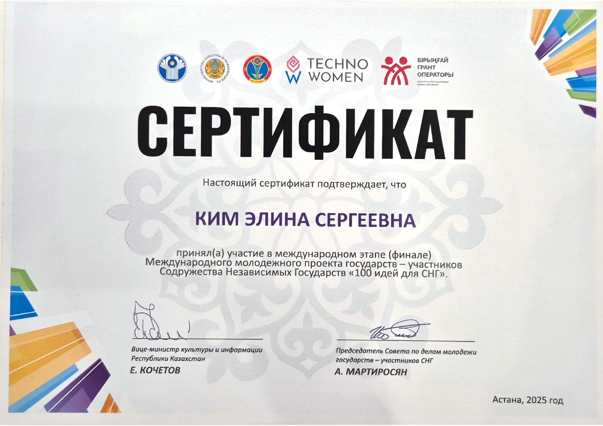
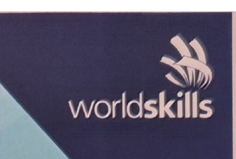

2025Финал международного этапа «100 идей для СНГ»
GameDev Center представил проект на международном этапе конкурса.
Геймджемы, выставки и образовательные мероприятия с участием SeeVerse Studio и GameDev Center.
GameDev Center организовал площадку в Астане. В джеме участвовали 14 городов и пять зарубежных площадок. В финал вышли 34 прототипа.
ОФИЦИАЛЬНАЯ СТРАНИЦА GGJ ↗ SPARK GAME JAM · 2026NU GameDevClub и GameDev Center провели 64-часовой джем. На itch.io опубликована 61 заявка. Призовой фонд составил 500 000 ₸.
СТРАНИЦА ДЖЕМА НА ITCH.IO ↗ NU GDC SUMMER GAME JAM · 2025NU GameDevClub провёл летний джем. Работы и результаты опубликованы на itch.io.
СТРАНИЦА ДЖЕМА НА ITCH.IO ↗ RAID · GAMES UNITED FACTORY #1На RAID команды собирают или дорабатывают демо, получают отзывы экспертов и показывают игры представителям индустрии.
ПРОЕКТЫ И РЕЗУЛЬТАТЫ RAID ↗
2025GameDev Center представил проект на международном этапе конкурса.

2025—2026Элина Ким работала независимым, затем главным экспертом. Шермухаммед Рахметов получил серебро на городском этапе и Medallion for Excellence на национальном.
GameDev Center проводил инкубацию и региональные интенсивы, участвовал в Comic Con, Digital Bridge и GameDev Fest.
Фотоальбом ↗ Фотографии и видео с фестиваля в Астане.
Команда основала студию в Астане и начала работу над играми для телефонов, ПК и браузера.
Фотоальбом ↗ Семь команд представили проекты, подготовленные в инкубационной программе, и получили отзывы.
Фотоальбом ↗ На площадке показывали инди-игры и проводили встречи с разработчиками и косплеерами.
Фотоальбом ↗ Borsyq Games представила студию и проекты в стартап-зоне Digital Bridge.
Фотоальбом ↗ Участники сформировали команды, сделали прототипы в GameDev Center и представили их на финальном показе.
Фотоальбом ↗ Участники представляют работы, созданные в рамках обучения Omnium.
Фотоальбом ↗ Элина — независимый эксперт; Шермухаммед получает серебро в 3D-моделировании компьютерных игр.
Фотоальбом ↗ На площадке выступали разработчики и проходили презентации игр казахстанских команд.
Фотоальбом ↗ Команда представила программы GameDev Center на международном этапе конкурса.
Фотоальбом ↗ 214 участников, 99 команд и пять зарубежных локаций; 34 проекта доходят до финала, призовой фонд — 900 000 ₸.
В первом потоке было 18 участников, во втором — 33. На вводных встречах участники распределили роли и задачи.
Фотоальбом ↗ Шермухаммед Рахметов проводит три практических занятия для стажёров: два потока по 10 участников и заключительное занятие для пяти.
Фотоальбом ↗ Матвей Сеселкин координирует встречу с клубом NU GDC и настольный турнир для 13 участников.
Шесть участников прошли этапы от концепт-арта и моделирования до анимации и импорта в Unreal Engine 5.
Фотоальбом ↗ В Qyzgaldaq Saraiy команда провела показы игр, тестирование с посетителями, презентации проектов и выступления спикеров.
Элина Ким и Матвей Сеселкин проводят двухдневную практику для четырёх школьников 8–9 классов по созданию VR-симулятора.
Практические мастер-классы для начинающих; занятие по Maya ведёт Шермухаммед Рахметов.
Фотоальбом ↗ Участники показывают игры, созданные за восемь недель производственной практики.
Команда начала работать под названием SeeVerse Studio. Студия разрабатывает игры и курирует программы GameDev Center.
Двуязычная обучающая игра вышла в App Store. Сайт и визуальное оформление проекта представлены в портфолио Элины Ким.
В джеме участвовали 264 человека в 124 командах. Призовой фонд при поддержке MyTona составил 500 000 ₸.
Фотоальбом ↗ Элина Ким и Матвей Сеселкин провели занятия вместе с партнёрами. Участники познакомились с игровыми профессиями и начали работу над проектами.
Фотоальбом ↗ На экскурсиях в Astana Hub участникам рассказали о GameDev Center и его стажировках.
Фотоальбом ↗ Казахстанские команды представили инди-игры на GameDev Fest и Digital Qazaqstan. Фотоальбом Digital Qazaqstan ↗